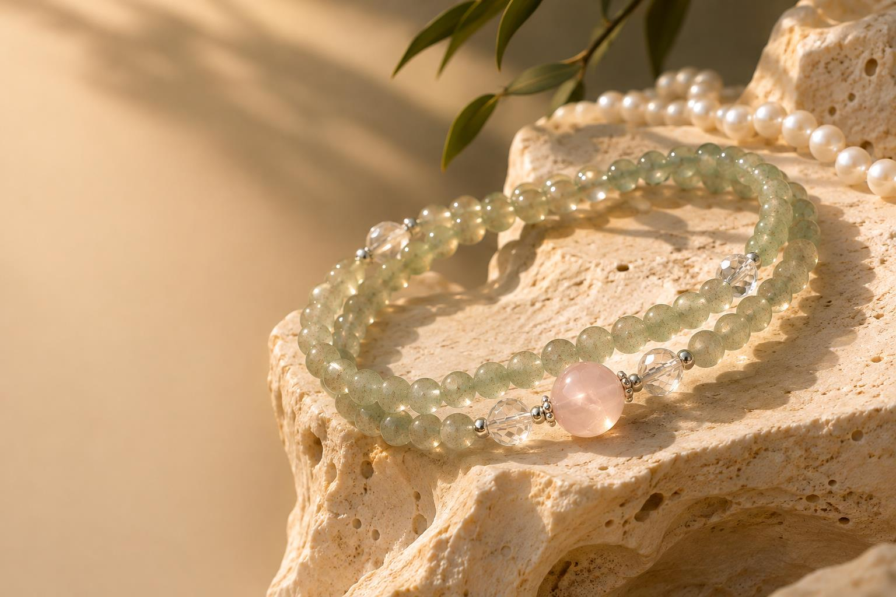
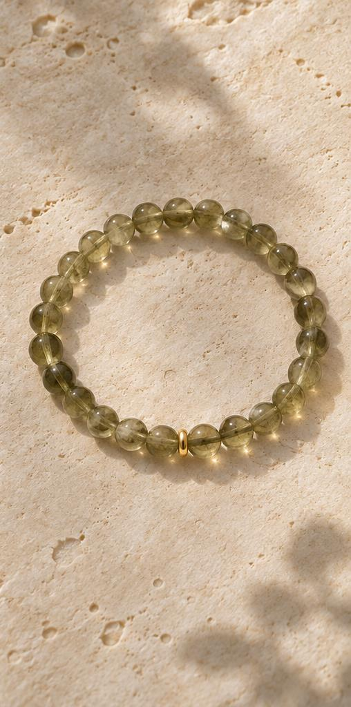

ROOTED IN NATURE
ROOTED IN NATURETHE SENHUI STORY
根植于森，
向光而晖。
「森」，是万木生长的蓬勃。
「晖」，是东方初照的日光。
驻扎江苏东海，亲近从原石到成品的过程。我们想做东方美学的甄选者，让水晶与珍珠成为可以佩戴的日常。
走进森晖↗
THE CURATED COLLECTION
 CRYSTAL EDITION↗
CRYSTAL EDITION↗水晶 · 清透系列探索作品 ↗
 PEARL EDITION↗
PEARL EDITION↗珍珠 · 温润系列探索作品 ↗

CRYSTAL EDITION↗水晶 · 山色系列探索作品 ↗
商品图片为 AI 创意示意。名称与搭配为系列概念，实售材质、尺寸、价格、库存及证书以店铺确认为准。
ROOTED IN NATURETHE SENHUI STORY
「森」，是万木生长的蓬勃。
「晖」，是东方初照的日光。
驻扎江苏东海，亲近从原石到成品的过程。我们想做东方美学的甄选者，让水晶与珍珠成为可以佩戴的日常。
走进森晖↗
A QUIET KIND OF BEAUTY
我们珍视的，是佩戴时那一份安定、温润与自在。
阅读甄选之道 ↗YOUR PERSONAL SELECTION
选一件与自己相契的作品，
也为在意的人，留一份温润的心意。